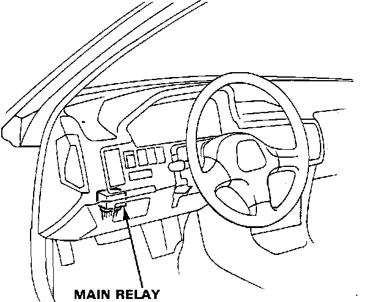
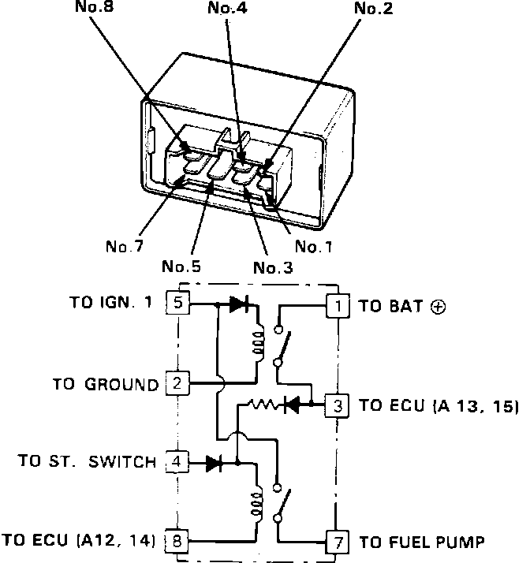

Main Relay (Computer/Fuel System): Testing and Inspection
NOTE: If the car stands and continues to run, the Fuel Pump Main Relay is GOOD.Fuel Pump Main Relay Location:

1. Remove the Fuel Pump Main Relay from under the dash. It is to the left of the steering wheel, mounted on the back of the fuse panel.
Main Relay:

2. Attach battery positive voltage to the No.4 terminal and battery negative voltage to the No.8 terminal of the Fuel Pump Main Relay. Then check for continuity between the No.5 terminal and the No.7 terminal of the Fuel Pump Main Relay.
a. If there is continuity, go on to step 3.
b. If there is no continuity, replace the relay and retest.
3. Attach battery positive voltage to the No.5 terminal and battery negative voltage to the No.2 terminal of the Fuel Pump Main Relay. Then check that there is continuity between the No.1 terminal and No.3 terminal of the Fuel Pump Main Relay.
a. If there is continuity, go on to step 4.
b. If there is no continuity, replace the relay and retest.
4. Attach battery positive voltage to the No.3 terminal and battery negative voltage to the No.8 terminal of the Fuel Pump Main Relay. Then check that there is continuity between the No.5 and the No.7 terminal of the Fuel Pump Main Relay.
a. If there is continuity, the relay is GOOD.
b. If there is no continuity, replace the relay and retest.